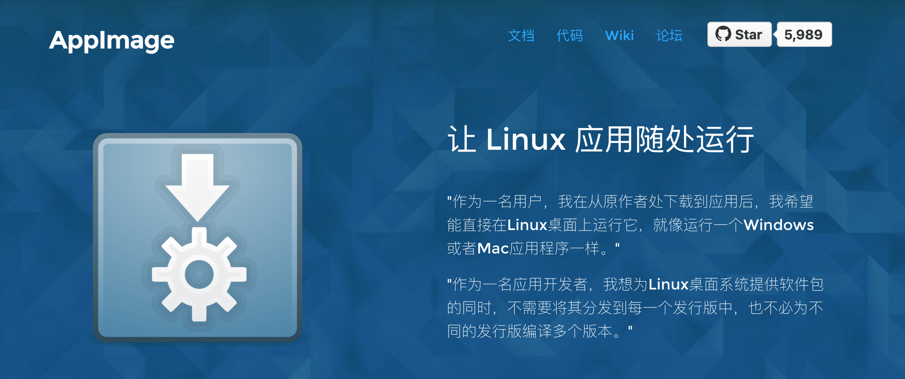
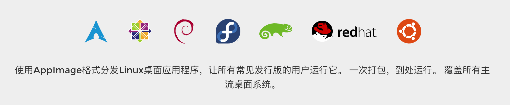

AppImage: 简单、兼容、无需安装、无需权限、便携并保持基础操作系统不变！
AppImage 是一种在 Linux 系统中用于分发便携式软件，且不需要超级用户权限来安装它们的格式。它还允许 Linux 的上游开发者来分发他们的程序而不用考虑不同 Linux 发行版间的区别。AppImage 的核心思想是一个文件即一个应用程序，每个 AppImage 都包含应用程序以及应用程序运行所需的所有文件。

1. 工具介绍
像 Linux 本身一样，AppImageKit 是开源的。

- [1] 简单
AppImage 的核心思想是：一个应用程序 = 一个文件。每个 AppImage 都包含应用程序以及应用程序运行所需的所有文件。换句话说，除了操作系统本身的基础组件，Appimage 不需要依赖包即可运行。
- [2] 可靠
AppImage 格式是上游应用打包的理想选择，这意味着你可以直接从开发者那里获取软件，而不需要任何中间步骤，这完全符合开发者意图。非常迅速。
- [3] 快速
AppImage 应用可以直接下载并且运行，无需安装，并且不需要 root 权限。
2. 工具对比
对比多种软件格式的优势和劣势！
[1] 与 deb 和 rpm 对比
- 优势
AppImage格式的应用可跨发行版运行，传统格式不可用或比较难。AppImage格式不需要安装即可运行，可在$HOME分区运行，节省更分区空间。AppImage无需root权限，告别输入密码时代。AppImage包含应用依赖，可不受软件仓库制约，快速分发应用版本且不破坏系统依赖。AppImage提供多种打包方式，即可手动打包，也可脚本打包。
- 劣势
AppImage格式会造成库的冗余且体积偏大，戏称为“系统安装了一万个 libc”。AppImage不受检查，如果有来源不明的人打包，可能会带来安全风险。- 运行一个旧的
AppImage软件所带的依旧是旧版本的依赖库，可能会带来风险。
[2] 与 snap 和 flatpak 对比
- 优势
AppImage无需运行时，安装snap和flatpak软件安装其运行时。AppImage格式不需要安装即可运行，可在$HOME分区运行，节省更分区空间。AppImage无需root权限，告别输入密码时代。AppImage不需要软件仓库，当然也可以有，易于传播。AppImage对华人友好，包括官方网站和官方文档都已经有对应的中文支持。
- 劣势
- 没有沙箱机制。
- 没有商业公司支持，导致开发了十多年才具有影响力。
- 对某些定制化安装的发行版不友好，比如
gentoo、archlinux等。
3. 工具使用
介绍 AppImage 工具的使用格式和常用命令参数。
- [1] 打包命令使用
appimagetool 命令用于把现有的 AppDir 目录生成一个 AppImage 程序。
Usage:
appimagetool [OPTION...] SOURCE [DESTINATION] - Generate, extract, and inspect AppImages
Help Options:
-h, --help Show help options
Application Options:
-l, --list List files in SOURCE AppImage
-u, --updateinformation Embed update information STRING; if zsyncmake is installed, generate zsync file
-g, --guess Guess update information based on Travis CI or GitLab environment variables
--bintray-user Bintray user name
--bintray-repo Bintray repository
--version Show version number
-v, --verbose Produce verbose output
-s, --sign Sign with gpg[2]
--comp Squashfs compression
-n, --no-appstream Do not check AppStream metadata
--exclude-file Uses given file as exclude file for mksquashfs, in addition to .appimageignore.
--runtime-file Runtime file to use
--sign-key Key ID to use for gpg[2] signatures
--sign-args Extra arguments to use when signing with gpg- [2] 打包文件使用
如果我们运行一个由 AppImageKit 工具构建的程序，那么其会附加以下参数，对应不同的参数会提供一些额外的特性和功能。
# usage
./appimagetool-x86_64.AppImage some.AppDir| 编号 | 参数 | 解释说明 |
|---|---|---|
| 1 | --appimage-help |
显示帮助选项 |
| 2 | --appimage-offset |
显示文件系统镜像开始的偏移量 |
| 3 | --appimage-extract |
从文件系统镜像中提取内容 |
| 4 | --appimage-mount |
挂载嵌入式文件系统镜像并打印挂载地址 |
| 5 | --appimage-signature |
显示 AppImage 中的数字签名 |
| 6 | --appimage-updateinformation |
显示 AppImage 中的更新信息 |
| 7 | --appimage-version |
显示 AppImageKit 的版本 |
- [3] 常用打包脚本
4. 简单使用
linuxdeployqt 是 Linux 下的 qt 打包工具！
- [1] 工具安装
# 下载linuxdeployqt工具
$ wget "https://github.com/probonopd/linuxdeployqt/releases/download/7/linuxdeployqt-7-x86_64.AppImage"
# 重命名linuxdeployqt名称
$ mv linuxdeployqt-continuous-x86_64.AppImage linuxdeployqt
# 变成系统可执行文件
$ sudo mv ./linuxdeployqt /usr/local/bin
$ sudo chmod 755 linuxdeployqt
# 查看linuxdeployqt版本
$ sudo linuxdelpoyqt --version
linuxdeployqt 4 (commit 988d294), build 481 built on 2018-02-02 15:05:23 UTC# linuxdeployqt命令要用到-appImage选项
$ wget -c "https://github.com/AppImage/AppImageKit/releases/download/12/appimagetool-x86_64.AppImage" -O /usr/local/bin/appimagetool
# 变成系统可执行文件
$ sudo chmod a+x /usr/local/bin/appimagetool
- [2] 打包程序
# 不能定会成功
$ linuxdeployqt <自己的工程名称> -appimage5. 官方示例
打包软件程序的简单演示流程 - cmake
- 生成 AppDir 打包目录
# fetch sources (you could as well use a tarball etc.)
> git clone https://github.com/linuxdeploy/QtQuickApp.git
> cd QtQuickApp
# build out of source
> mkdir build
> cd build
# configure build system
# the flags below are the bare minimum that is needed, the app might define additional variables that might have to be set
> cmake .. -DCMAKE_INSTALL_PREFIX=/usr
# build the application on all CPU cores
> make -j$(nproc)
# now "install" resources into future AppDir
> make install DESTDIR=AppDirAppDir
└── AppRun
└── your_app.desktop
└── your_app.png
└── usr
├── bin
│ └── your_app
├── lib
└── share
├── applications
│ └── your_app.desktop
└── icons
└── <theme>
└── <resolution>
└── your_app.png- 使用 linuxdeploy 打包成 AppImages
# get linuxdeploy's AppImage
> wget https://github.com/linuxdeploy/linuxdeploy/releases/download/continuous/linuxdeploy-x86_64.AppImage
> chmod +x linuxdeploy-x86_64.AppImage
# run linuxdeploy and generate an AppDir
> ./linuxdeploy-x86_64.AppImage --appdir AppDir- 官方的 cmake 工具打包示例
#! /bin/bash
set -x
set -e
# building in temporary directory to keep system clean
# use RAM disk if possible (as in: not building on CI system like Travis, and RAM disk is available)
if [ "$CI" == "" ] && [ -d /dev/shm ]; then
TEMP_BASE=/dev/shm
else
TEMP_BASE=/tmp
fi
BUILD_DIR=$(mktemp -d -p "$TEMP_BASE" appimage-build-XXXXXX)
# make sure to clean up build dir, even if errors occur
cleanup () {
if [ -d "$BUILD_DIR" ]; then
rm -rf "$BUILD_DIR"
fi
}
trap cleanup EXIT
# store repo root as variable
REPO_ROOT=$(readlink -f $(dirname $(dirname $0)))
OLD_CWD=$(readlink -f .)
# switch to build dir
pushd "$BUILD_DIR"
# configure build files with CMake
# we need to explicitly set the install prefix, as CMake's default is /usr/local for some reason...
cmake "$REPO_ROOT" -DCMAKE_INSTALL_PREFIX=/usr
# build project and install files into AppDir
make -j$(nproc)
make install DESTDIR=AppDir
# now, build AppImage using linuxdeploy and linuxdeploy-plugin-qt
# download linuxdeploy and its Qt plugin
wget https://github.com/linuxdeploy/linuxdeploy/releases/download/continuous/linuxdeploy-x86_64.AppImage
wget https://github.com/linuxdeploy/linuxdeploy-plugin-qt/releases/download/continuous/linuxdeploy-plugin-qt-x86_64.AppImage
# make them executable
chmod +x linuxdeploy*.AppImage
# make sure Qt plugin finds QML sources so it can deploy the imported files
export QML_SOURCES_PATHS="$REPO_ROOT"/src
# initialize AppDir, bundle shared libraries for QtQuickApp, use Qt plugin to bundle additional resources, and build AppImage, all in one single command
./linuxdeploy-x86_64.AppImage --appdir AppDir --plugin qt --output appimage
# move built AppImage back into original CWD
mv QtQuickApp*.AppImage "$OLD_CWD"